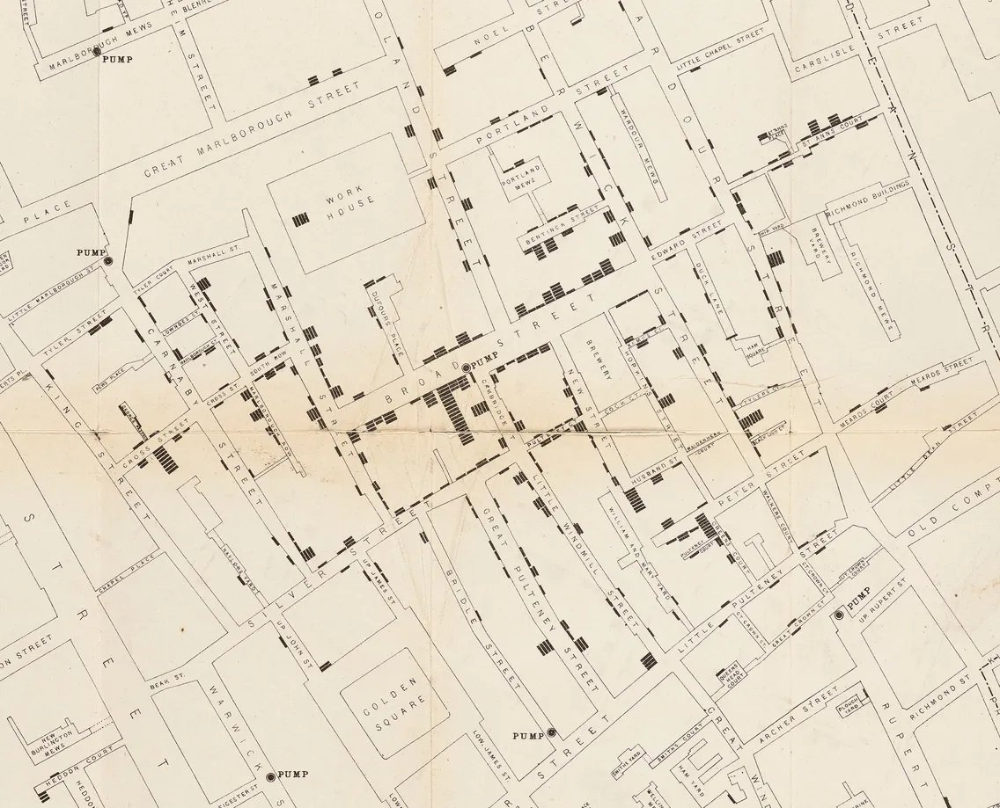
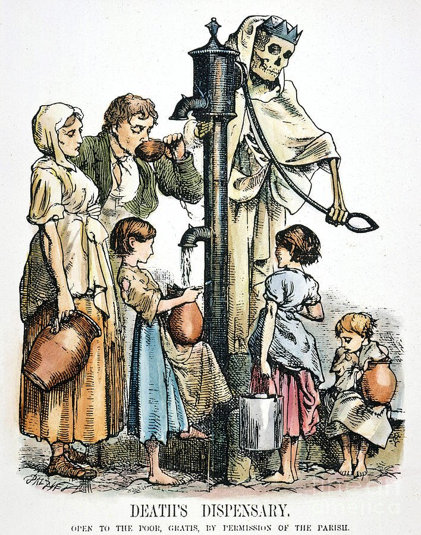
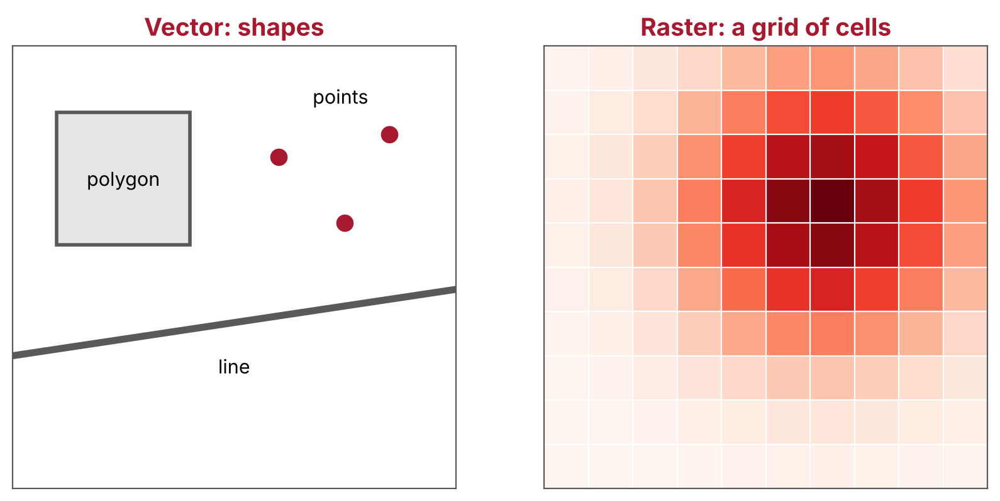
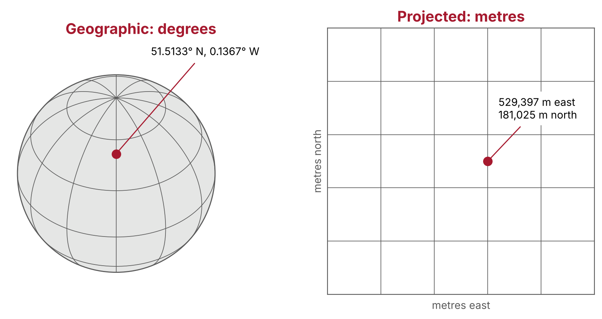
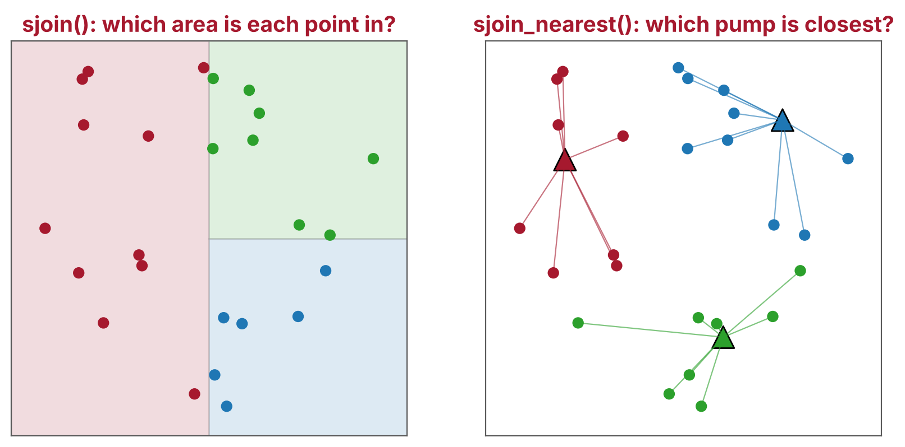
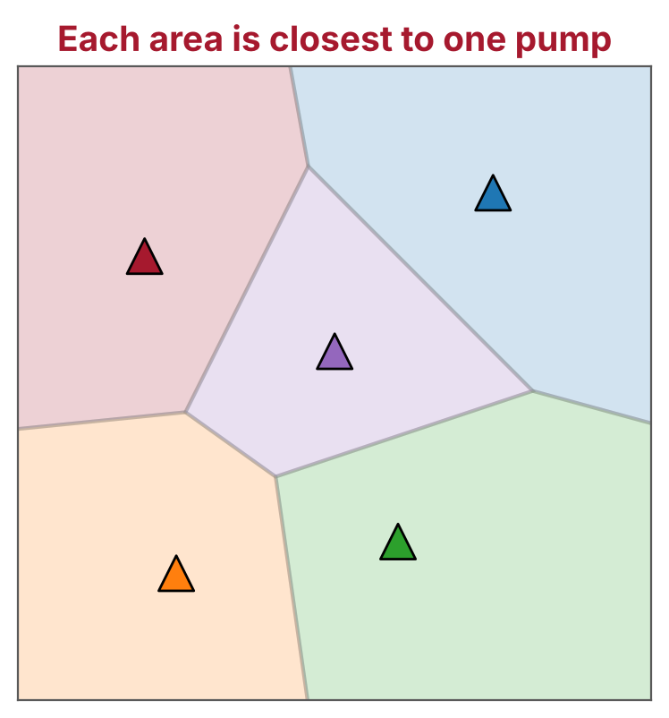
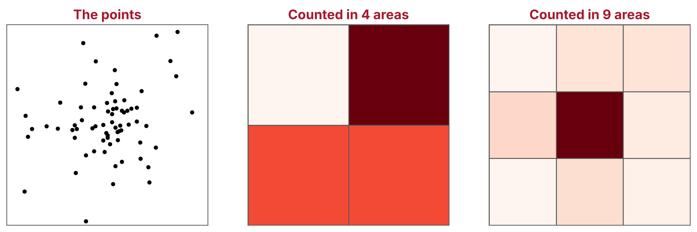

%pip install --quiet "geopandas>=1.0" contextily folium mapclassifyMapping John Snow’s cholera outbreak
Some theory. Then code it together.
Can you find the source of a cholera outbreak, using a map?
The story Soho, 1854 Cholera, two theories, and John Snow’s map
1 · Location data What do the numbers mean? Vector and raster data, GeoDataFrames and coordinate reference systems Exercise: where is pump 0?
2 · Making maps How do we show it? Layers, background maps and interactive maps Exercise: an interactive map
3 · The nearest pump Which pump was closest? Spatial relationships and spatial joins Exercise: deaths within 100 metres
4 · Pump catchments Which area did each pump serve? Voronoi polygons and choropleth maps Exercise: a map of catchments
5 · What the map cannot tell us Should we believe it? The evidence beyond the map, and the limits of areas Exercise: question the map
Soho, London, 1854
A London slum, 1860s. Wikimedia Commons
Cholera “Tramples the victors & the vanquished both”, Robert Seymour, 1831. National Library of Medicine
Miasma
Disease spreads through “bad air”, from rotting matter and filth. Most doctors believed this
Water
John Snow, a London physician, thought cholera spread through contaminated water
The two theories predict different patterns: bad air would spread across a neighbourhood, but water would cluster around its source
30 Aug 1854
Outbreak starts → 1 Sep
143 fatal cases → Early Sep
Snow visits homes → 7 Sep
Evidence to parish → 8 Sep
Handle removed
Sources: UCLA Department of Epidemiology, CDC

John Snow’s map. Wellcome Collection

Death’s Dispensary, from the magazine Fun, 1866: Death himself works the pump
Snow died in 1858. Within a decade, the link between dirty water and disease was a subject for cartoons
George J. Pinwell, 1866. Public domain
250 addresses where one or more people died
489 deaths
8 water pumps
Robin Wilson traced the deaths and pumps from Snow’s map, and lined them up with a modern map: johnsnow.rtwilson.com
Together 10 min
How is location data stored, and what do the numbers mean?
Where A location: a point, a line or an area, given as coordinates
What The values we know about that place: the number of deaths at an address
Health examples Patients’ postcodes, GP surgeries, hospital catchments, air pollution
What it adds Location links datasets that share nothing else, and shows patterns a table can hide
“Everything is related to everything else, but near things are more related than distant things.”
Waldo Tobler’s “first law of geography”, 1970

| Vector | Raster | |
|---|---|---|
| Stores | Shapes, each with a row of values | A grid of cells, each with a value |
| Best for | Things with edges: buildings, roads, addresses | Things that vary smoothly: air pollution, temperature |
| Files | Shapefile, GeoPackage, GeoJSON | GeoTIFF |
| Python | geopandas | rasterio, xarray |
Points An address, a pump, a hospital
Lines A road, a river, a bus route
Polygons A building, a postcode area, a catchment
A table of values + A geometry column = A GeoDataFrame
Together live code
GeoDataFrame A pandas DataFrame with a geometry column
Shapefile Several files that travel together: .shp, .dbf, .shx, .prj

A coordinate is just two numbers. The CRS says what they are measured from, and in what units
Geographic CRS Latitude and longitude, in degrees, on the curved Earth. GPS and web maps use WGS 84 (EPSG:4326)
Projected CRS The Earth flattened onto a grid, in metres. The British National Grid (EPSG:27700) is made for Great Britain
✘ Flattening the Earth always distorts something: area, shape, distance or direction. No map keeps them all
✔ Measure distances and areas in a projected CRS made for your area
✔ set_crs() labels: use it when the CRS is missing or wrong
✔ to_crs() converts: use it to change CRS
✘ Measuring distances in latitude and longitude: the answer is in degrees
Your turn 5 min
pumps to latitude and longitudelatitude, longitude. Which street is it on?Hint: .geometry.y and .geometry.x. Exercise 1 in the notes.
Answer 3 min
About 51.5133, -0.1367: Broadwick Street, called Broad Street in 1854
10 minutes
How do we turn a table of points into a map that people can read?
The data The layer you want people to look at, drawn so it stands out
Context A background map, so readers know where they are
A key A legend or caption that says what the symbols mean
Credit Where the data and the background map came from
| Good for | In geopandas | On Snow’s map | |
|---|---|---|---|
| Size | Amounts, such as a count | markersize= |
The height of each stack of bars |
| Colour | Amounts, or categories | column=, cmap= |
Not used |
| Shape | Different kinds of thing | marker= |
Bars for deaths, dots for pumps |
Snow showed the number of deaths at each address by the height of the stack: we will use the size of each dot
Together live code
Deaths + Pumps + Street map
crs=deaths.crs fits the map tiles to our data.plot() Static: reports, papers, slides
.explore() Interactive: exploring data, web pages
Your turn 7 min
m, with name="Deaths"pumps.explore(m=m, color="blue", name="Pumps")folium.LayerControl().add_to(m), after import foliumExercise 2 in the notes.
Answer 3 min
m = deaths.explore(
column="Count",
cmap="Reds",
marker_kwds={"radius": 4},
tiles="Esri.WorldStreetMap",
name="Deaths",
)
pumps.explore(m=m, color="blue", marker_kwds={"radius": 8}, name="Pumps")
folium.LayerControl().add_to(m)
m
worst = deaths.loc[deaths["Count"].idxmax()]
worst["geometry"].distance(pumps.geometry.iloc[0])15 deaths, about 17 metres from the Broad Street pump
Which pump was closest to each death?

Two shapes can intersect, one can contain the other, or they can be a distance apart. These relationships let us join tables by location
Join by a column pd.merge(): rows with the same value in a shared column, such as a patient ID
Join by location sjoin(): rows whose shapes intersect, or where one contains the other
Join to the nearest sjoin_nearest(): each row to the closest row of the other table
A spatial join links datasets that share nothing but their location
Together live code
index_right: the pump’s row (added by every spatial join)pump_id: the pump’s numberdistance: in metres, as the data is in the British National Grid| Pump | 0 | 1 | 4 | 5 | 7 | 2 | 3 | 6 |
|---|---|---|---|---|---|---|---|---|
| Deaths | 340 | 65 | 40 | 27 | 12 | 5 | 0 | 0 |
70% of the 489 deaths were nearest the Broad Street pump
Your turn 7 min
broad_street = pumps.geometry.iloc[0]deaths.distance(broad_street) to find the addresses within 100 metresExtra: broad_street.buffer(100) makes a 100 metre circle. Map it. Exercise 3 in the notes.
Answer 3 min
196 deaths, 40% of the total, within 100 metres of the pump
Which area did each pump serve?

For the parish’s inquiry, Snow redrew his map with a dotted line around the area closer to the Broad Street pump than to any other
Source: UCLA Department of Epidemiology
Together live code
from shapely.geometry import box
all_points = pd.concat([deaths.geometry, pumps.geometry])
xmin, ymin, xmax, ymax = all_points.total_bounds
study_area = box(xmin - 50, ymin - 50, xmax + 50, ymax + 50)
cells = pumps.voronoi_polygons(extend_to=study_area)
catchments = gpd.GeoDataFrame(geometry=cells)
catchments = catchments.sjoin(pumps, predicate="contains").clip(study_area)The same totals as the nearest pump. Why?
What it is A map of areas, each shaded by a value
Counts mislead Areas with more people have more deaths, whatever the cause
Rates are fairer Deaths per 1,000 people compares areas with different populations
Our data We have no population figures, so we can only map counts
Your turn 7 min
catchments with column="deaths", cmap="Reds" and legend=TrueExercise 4 in the notes.
Answer 3 min
Pumps 3 and 6 had no deaths in their catchments
Should we believe it?
Straight lines For some homes the Rupert Street pump was closer, but dead ends made Broad Street quicker to reach
The brewery No deaths in the blocks east of the pump. The brewery had its own well, and its workers drank beer
The Hampstead widow Susannah Eley had Broad Street water delivered to Hampstead. She and her niece caught cholera
The first case A curate, Henry Whitehead, traced it to a baby at 40 Broad Street, whose washing water went into a cesspit by the pump

The modifiable areal unit problem: the same data, counted in different areas, can show a different pattern
Your turn 5 min
Pick one question, and answer in the chat:
Exercise 5 in the notes.
Questions?
Jean Golding Institute © CC-BY 4.0